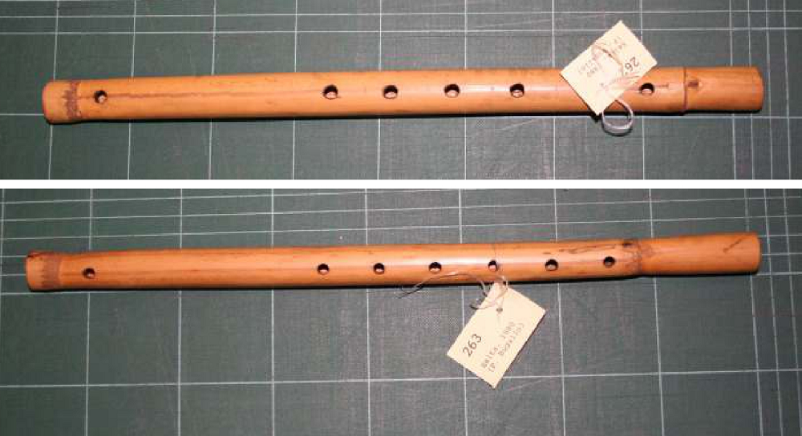

The temímby ye piása of the Ava people
Sketch 023
Home > Blog A Musician's Log > Sketch 023
The Ava, a Guarani-speaking people of the Bolivian and Argentine lowlands, preserved a complex musical tradition shaped by Amazonian, Arawak, Andean, and colonial influences despite centuries of warfare, displacement, and missionary intervention. Closely tied to rituals such as the aréte guásu, their musical heritage includes drums, flutes, trumpets, whistles, idiophones, and the singular turumi violin, all generally handcrafted by the performers themselves and embedded in ceremonial, social, and symbolic practices linking music, dance, memory, sexuality, warfare, and relations between the living and the dead.
The temímby ye piása has a Guarani name that means "crossed flute" and that clearly indicates that it is a transverse flute. It is also called yúru ye piása ("crossed mouth") and chikitáno, the name of an ethnic group from the lowlands of eastern Bolivia (Chiquitano) who may have been its first users, following its introduction by Jesuit missionaries.
It is made from a segment of common reed (Arundo donax) or takuapúku of varying dimensions, but no less than 30 cm in length between partitions. The mouthpiece can be square or round, and it has six finger holes. These are all located frontally, over a straight line obtained by lifting a thin strip of the reed's outer layer. The first hole is pierced by fire in the middle of the tube, and the others are placed equidistantly between this first hole and the distal end, generally 2.5 cm apart.
This aerophone is used for the rounds and foot-stomping music typical of Easter. It is usually played at the same time as the turúmi, although its repertoire is different. It is accompanied by an angúa guásu and two angúa rái.
More information about these sound artifacts can be found in the free-access digital book Musical instruments of the Ava people, accessible through the "Digital books on music. Series 1" section.